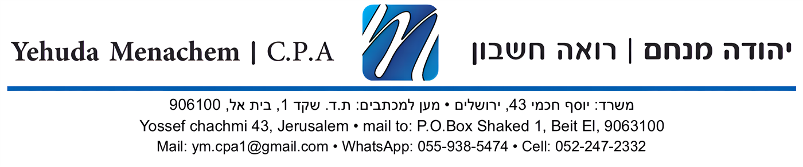
מטרת המדריך הזה היא לעשות סדר באופן העבודה שלנו, כדי שכל המסמכים יופקו בצורה נכונה ובהתאם למועד קבלת התשלום.
מצורפות תמונות לכל שלב בתחתית המדריך.
ברגע שסיימנו לבצע עבודה או לספק שירות, מוציאים חשבון עסקה.
חשבון העסקה נועד ליידע את הלקוח כמה עליו לשלם, אבל הוא עדיין לא מהווה חשבונית מס, ולכן לא מדווחים עליו למע"מ.
ברגע שמתקבל תשלום, לא משנה באיזו דרך (העברה בנקאית, אשראי, מזומן או צ'ק), מוציאים חשבונית מס/קבלה.
החשבונית צריכה להיות בדיוק על הסכום שהתקבל בפועל.
מסמך המשך משמש לסגירת עסקאות פתוחות באמצעות קבלה, חשבונית מס קבלה, או לסגירת קבלה עם חשבונית מס. לא ניתן לקשר בין מסמכים שלא הופקו באמצעות מסמך המשך.
אם הלקוח שילם רק חלק מהחשבון, מוציאים חשבונית מס/קבלה רק על הסכום ששולם.
לדוגמה:
מוציאים חשבונית מס/קבלה על 4,000 ₪ בלבד.
כאשר יתקבלו 6,000 ₪ הנותרים, מוציאים חשבונית מס/קבלה נוספת על היתרה.
אם עדיין לא התקבל תשלום והופק רק חשבון עסקה, אין צורך להוציא זיכוי. פשוט מבטלים את חשבון העסקה במערכת (סגירת עסקה).
אם כבר יצאה חשבונית מס/קבלה ולאחר מכן העסקה בוטלה, יש להוציא חשבונית זיכוי בהתאם לנהלים.
אם הלקוח מנכה מס במקור, יש להוציא את החשבונית מס/קבלה על מלוא סכום החשבונית, ולא רק על הסכום שנכנס בפועל לחשבון הבנק.
לדוגמה:
במקרה כזה יש להוציא חשבונית מס/קבלה על 10,000 ₪, כאשר מצוין בה שנוכה מס במקור בסך 500 ₪, כך שהיתרה לתשלום היא 9,500 ₪.
חשוב לזכור שניכוי מס במקור נחשב מבחינת רשויות המס כאילו התקבל תשלום גם על הסכום שנוכה, ולכן אין להוציא חשבונית מס/קבלה רק על הסכום שנכנס לחשבון הבנק.
שלב 1: הוצאת חשבון עסקה
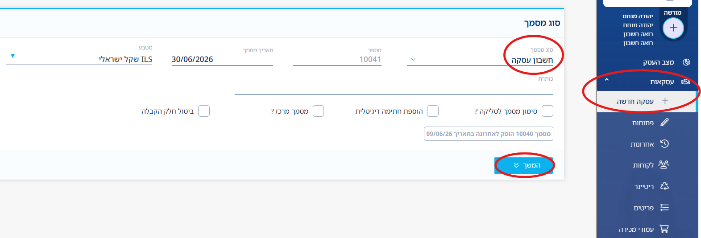
ניתן להגיע ליצירת הכנסה על ידי לחיצה על תמונת השטר בראש העמוד באפליקציה ובאתר, או בתפריט הראשי, עסקאות -> חשבון עסקה.
יש לבחור חשבון עסקה -> המשך -> לבחור את הלקוח, ואם אינו קיים ללחוץ על "לקוח חדש" -> תיאור העסקה, יש לציין את הפריט ואת המחיר, ניתן להוסיף שורות נוספות לפריטים נוספים -> הערה, במידה ויש. לאחר מכן ללחוץ תצוגה מקדימה, בשלב זה כדאי לעבור על נתוני המסמך טרם הפקתו וניתן לחזור אחורה ולתקן לפי הצורך, על ידי לחיצה על העיפרון מצד שמאל -> הפקת מסמך כדי להפיקו סופית.
שלב 2: התקבל תשלום - יצירת מסמך המשך
כיצד נפיק מסמך המשך: יש לעמוד על המסמך המבוקש מתוך עסקאות פתוחות.
ללחוץ על העיגול הירוק בצד ימין למטה.
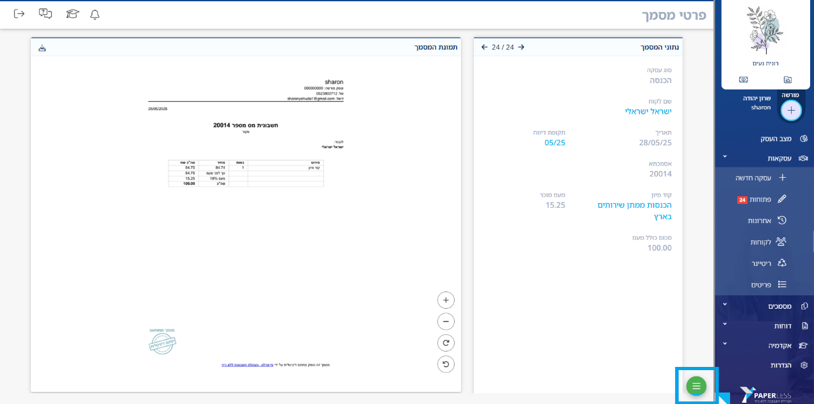
לבחור באפשרות "מסמך המשך".
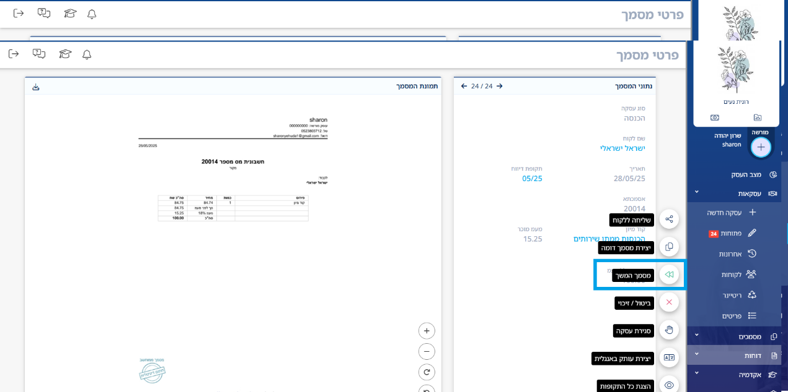
אין צורך לגעת בבחירה המובנת, אלא במקרים מיוחדים. נלחץ המשך.
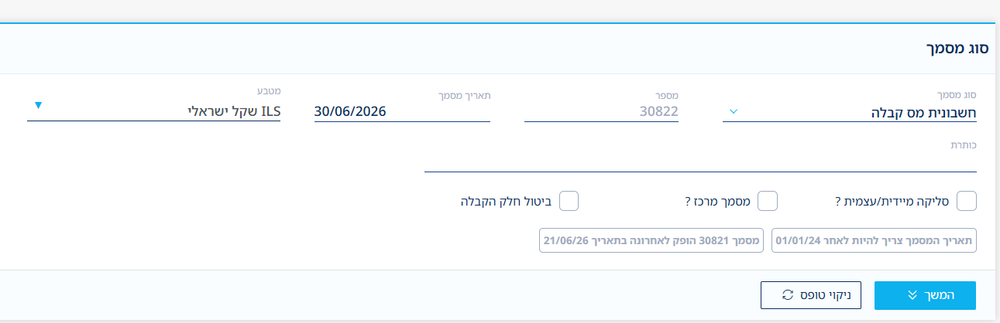
גם כאן, הלקוח ימשך מהחשבון עסקה, אין צורך לרשום מחדש את שמו. נלחץ המשך.
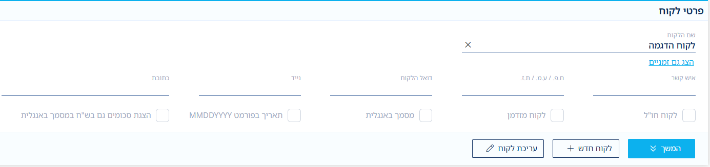
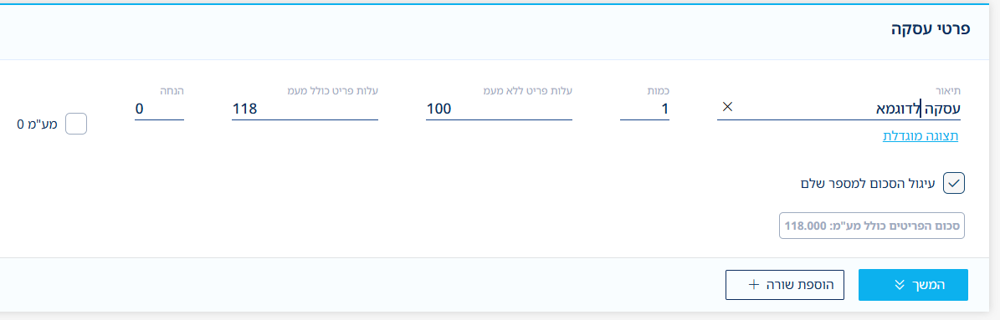
פרטי תשלום - כאן לבחור בסוג (העברה בנקאית, אשראי, מזומן או צ'ק), ניתן לעדכן תאריך מדויק. חשוב להקפיד להתאים את התאריך למועד המדויק בו התקבל הכסף בחשבון. (במידה והתקבל סכום לא תואם לחשבונית - יש לפעול לפי הסעיף הבא.)
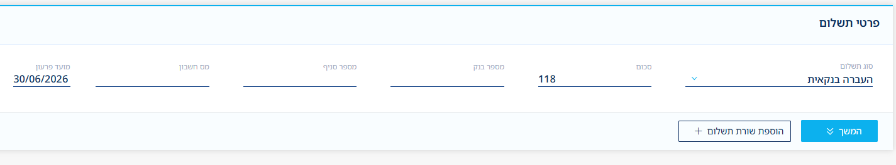
במקרים שלא התקבל מלוא הסכום, ייתכן שהלקוח ניכה במקור לפי האחוז שקבעו במס הכנסה (5%, 10% וכו'). יש ללחוץ על כפתור "הוספת שורת תשלום" ולבחור באופציה "ניכוי מס במקור".
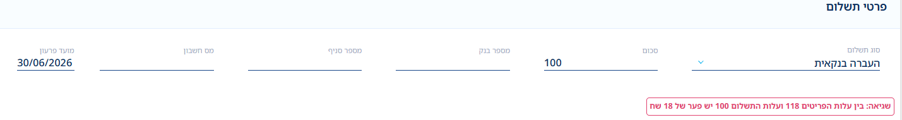
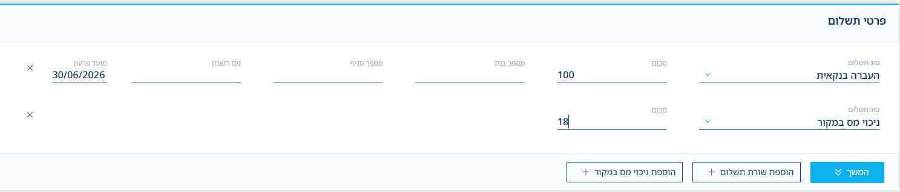
בשורה הזו יש לעדכן את סכום הניכוי שבוצע, נא לברר עם הלקוח האם ההפרש הוא אכן הסכום המדויק. לאחר הזנה תקינה של הנתונים, נלחץ המשך.
אפשר להזין הערות חד פעמיות במסמך, הן יופיעו ללקוח על החשבונית. במידה ואין הערות, נלחץ המשך > תצוגה מקדימה.
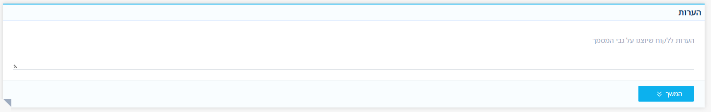
כעת יוצג דף תצוגה מקדימה לפני הפקת המסמך, זאת הזדמנות טובה לאמת שכל הנתונים תקינים לפני שסוגרים את המסמך הסופי.
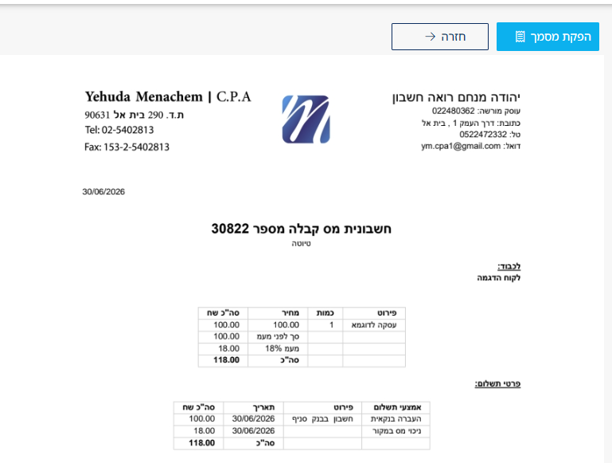
לאחר אימות, ניתן ללחוץ "הפקת מסמך". לאחר מספר שניות יעלה מסך שליחה ללקוח, דרכו מאשרים שליחה באמצעי הדיוור הנבחרים.
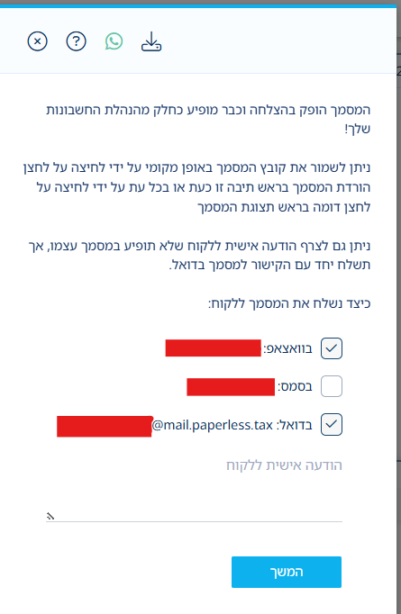
וזה כל תהליך ההפקה של חשבונית מס לאחר חשבון עסקה.
ביטול חשבון עסקה
ביטול עסקה הוא תהליך קצר אשר סוגר את המסמך שהופק. המסמך לא נעלם לתמיד אלא עובר למצב של סגירה ולא מופיע יותר במסך של המסמכים הפתוחים, או בדוח חייבים.
בכדי לבטל מסמך, יש לעמוד על המסמך המבוקש מתוך עסקאות פתוחות.
ללחוץ על העיגול הירוק בצד ימין למטה.
לבחור באפשרות "סגירת עסקה".
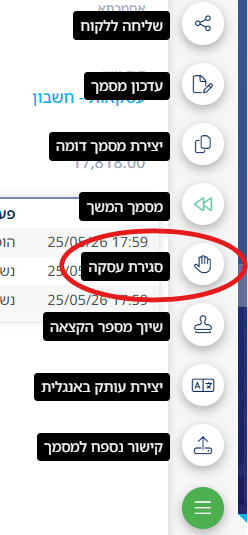
לחיצה על המשך, תסגור אותו ותאשר את הפעולה, וזה הכל.
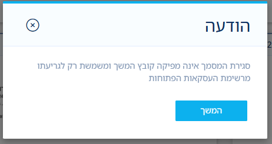